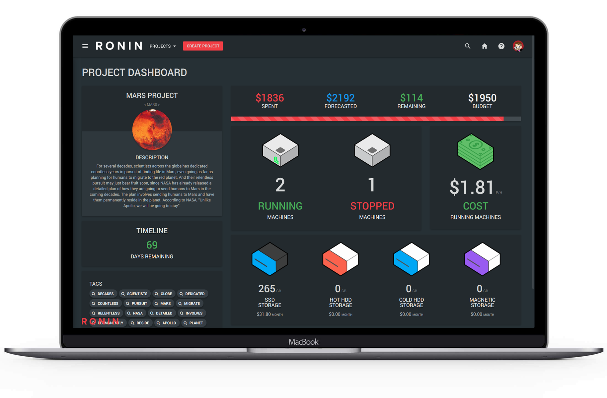
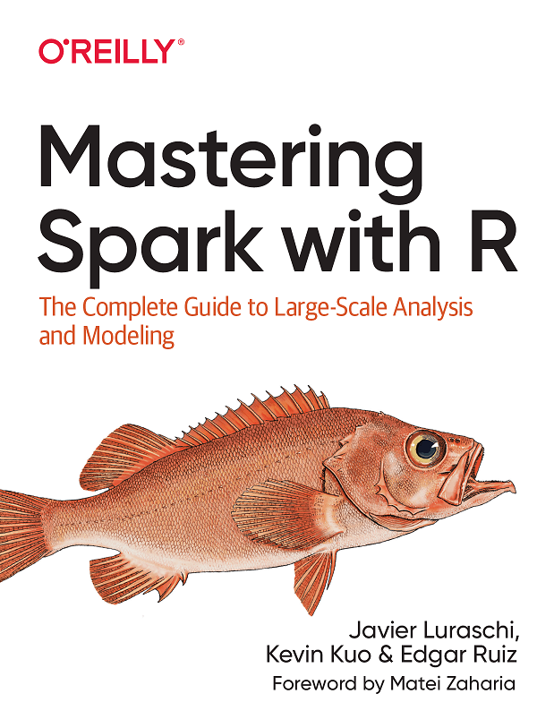

In this blog I will be touching on several topics related to the usage of Spark and R as an analytical tool. DHCRC The Medicaid data that have been made available by HMS and that can be accessed through the RONIN platform are massive, and will most likely require the use of some form of distributed computing in order to analyze them. Spark is a natural option in terms of distributed computing. Since many DHCRC researchers are familiar with R it seems useful to discuss how R can be used to run Spark processes without having to know too much about Spark. A similar reasoning applies to Python, but since I am more familiar with R than Python I am starting with R.
 RONIN is an user-friendly web application that allows anyone to launch complex computing and storage resources on AWS while keeping tracking of spending.
In the first part of this blog I will focus on Spark and R, independently of the RONIN platform and the specifics of the Medicaid data, and I will show how to run Spark and R locally on a desktop/laptop for training purposes. In the second part I will address the specifics of Ronin and we will see Spark in action on clusters of machines using Medicaid data.
As an R user my preference is to use R for everything I do and switch to other tools only if needed. Therefore I get very frustrated when I encounter a large data set I cannot analyze in R because it does not fit in memory and/or it would take too long to process. This is the case of HMS Medicaid data set, that is so large that just having a cursory look at it requires non-trivial effort. An attractive option to ease the frustration is to use R in conjunction with the sparklyr: this allows me to use R as an interface to Spark, writing code using R syntax while Spark works its magic in the background.
 This book is available online at https://therinspark.com/data.html.
But what is Spark anyway? Spark is a software platform that allows users to take advantage of computer clusters. Users who need to analyze large data sets can write programs in R, Python, Java, Scala and SQL and as long as they use a predefined set of operators and a certain programming model they may not even be aware that Spark is the engine powering such fast computations. One of the very attractive features of Spark is that it comes with a comprehensive machine learning library (MLlib) that includes both machine learning algorithms and workflow utilities such as feature transformation and pipelines. The MLlib can be invoked directly from R, giving R users access to unprecedented computational capabilities. What I also found very attractive of Spark is that basically you interact with it in R through the dplyr package, which has become the bread and butter of data manipulations, or through the DBI package, that allows you to use the full power of SQL. It also turned out that Spark was incredibly easy to install on my Dell laptop, and I was able to start to play with simple example within minutes of beginning the whole process. sparklyr package is not the only package that allows R users to interact with R: SparkR is also availale. However I found sparklyr easier to use and well documented in the recent book (Luraschi, Kuo, and Ruiz 2019). Therefore this is the package I will use in this blog.
Page built: 2020-01-21